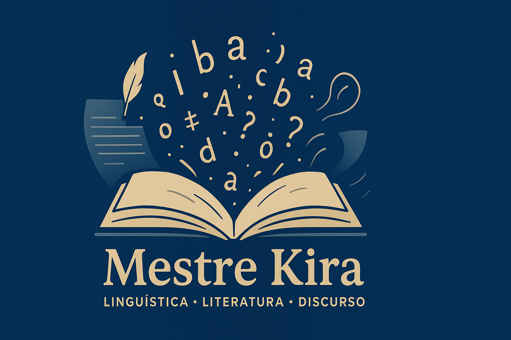

Redação UEMA PAES 2026: Cenários Político-Sociais e seus Impactos na Vida das Juventudes Brasileiras
O tema da redação do UEMA PAES 2026, “Os cenários político-sociais e seus impactos na vida das juventudes brasileiras”, exige dos estudantes uma análise crítica sobre como transformações sociais, econômicas e políticas moldam o cotidiano, o futuro e as oportunidades das juventudes no Brasil.
Bem-vindo ao Mestre Kira
O Mestre Kira é um ambiente digital voltado à produção e divulgação de conteúdos explicativos sobre temas das áreas de Linguística, Literatura e Análise do Discurso. Trata-se de um espaço formativo, comprometido com a difusão do conhecimento e a valorização do estudo da língua e da interpretação dos textos, construído com linguagem clara, acessível e didática.
O que você encontrará aqui
- Fonética e Fonologia
- Morfologia e Sintaxe
- Estudos Literários
- Análise do Discurso
Os conteúdos apresentados são teoricamente fundamentados e elaborados com objetivo pedagógico, voltados para quem busca compreender de forma mais profunda o funcionamento da linguagem, sua estrutura e suas múltiplas dimensões no campo do discurso e da literatura.
A quem se destina o site Mestre Kira
- Estudantes da educação básica interessados em aprimorar o domínio da língua portuguesa e a interpretação de textos;
- Estudantes de graduação em Letras – Língua Portuguesa e Literaturas;
- Professores das áreas de Língua Portuguesa e Literatura;
- Pesquisadores e leitores que desejam aprofundar seus conhecimentos sobre linguagem, discurso e produção de sentidos;
- Concursandos e vestibulandos que buscam conteúdos didáticos e de qualidade.
Cada publicação é planejada como uma ferramenta de estudo e reflexão crítica, dialogando com autores clássicos e contemporâneos da linguística, da teoria literária e das ciências da linguagem.
Uma proposta formativa, crítica e em constante construção
O Mestre Kira configura-se como um espaço de aprendizagem contínua, em que os conteúdos são organizados de forma progressiva e articulada, possibilitando ao leitor acompanhar o desenvolvimento dos temas e construir conhecimento de maneira gradual e significativa.
Este é um convite à escuta atenta da linguagem, ao exercício da leitura crítica e ao prazer de compreender como os sentidos se formam no discurso e na literatura.
Explore os conteúdos, compartilhe ideias e acompanhe as atualizações. O Mestre Kira é um espaço construído com rigor, clareza e compromisso com o conhecimento, a serviço da formação linguística e literária de seus leitores.
Publicações mais recentes
Sobre o criador
Sou Leildo Gonçalves, criador do site Mestre Kira. Formado em Licenciatura em Letras Língua Portuguesa e Literaturas de Língua Portuguesa pela Universidade Estadual do Maranhão - UEMA, trabalho da educação básica de Lago do Junco - MA.
Conheça mais sobre mim. Acesse o Currículo Lattes.